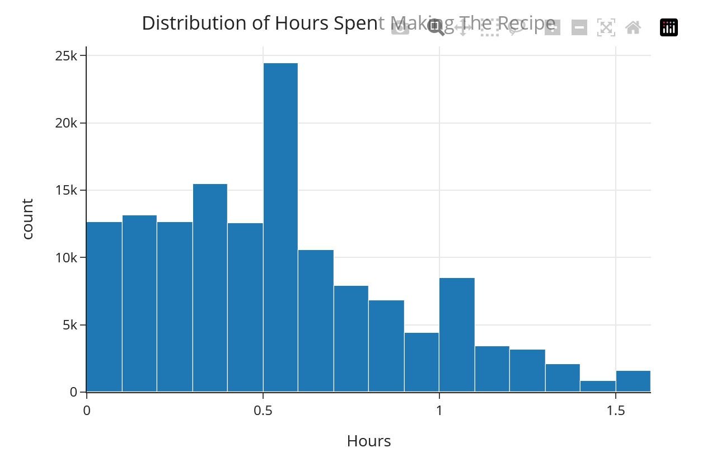
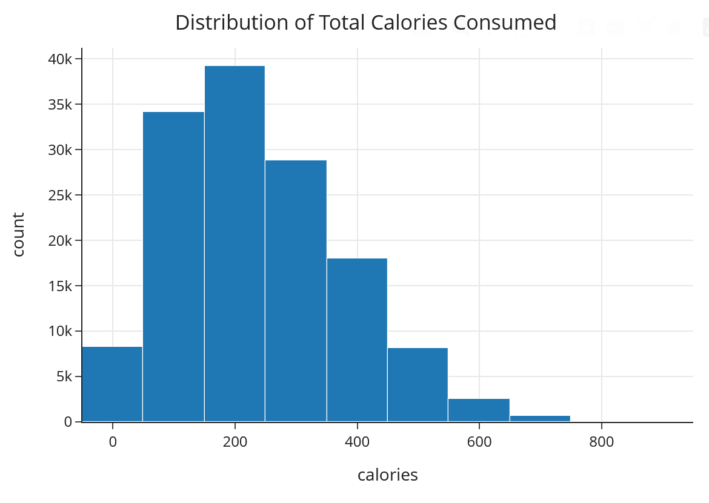
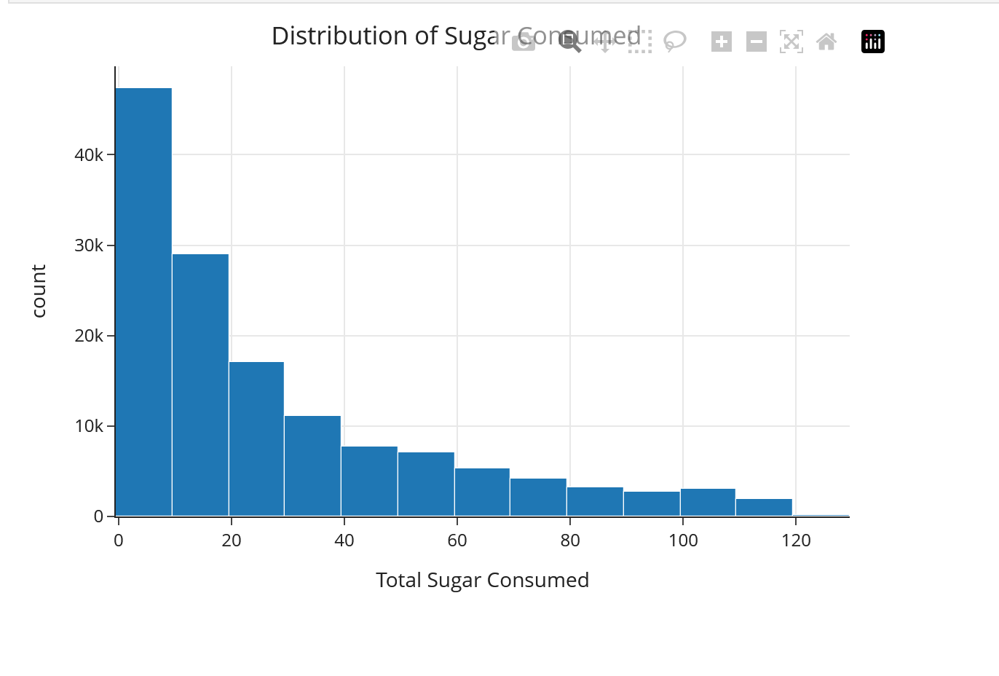
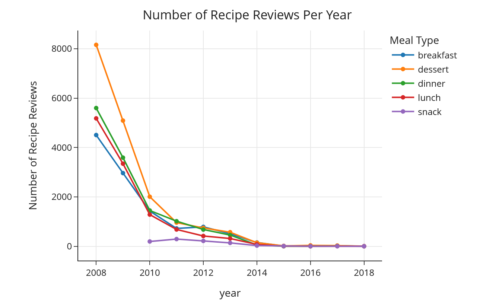
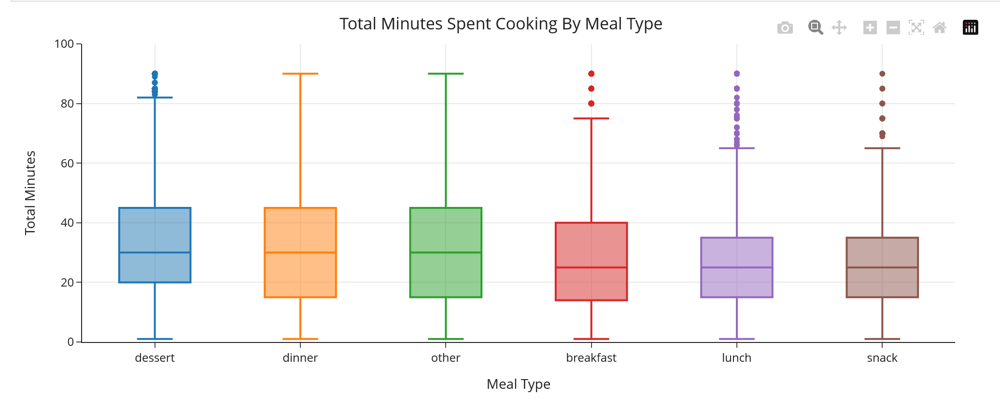
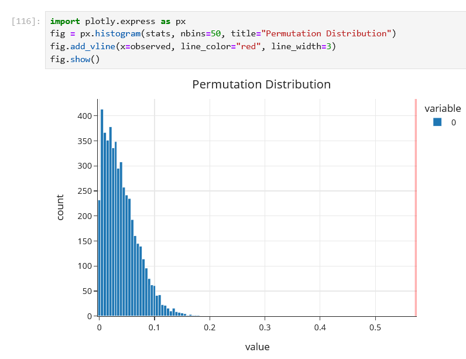
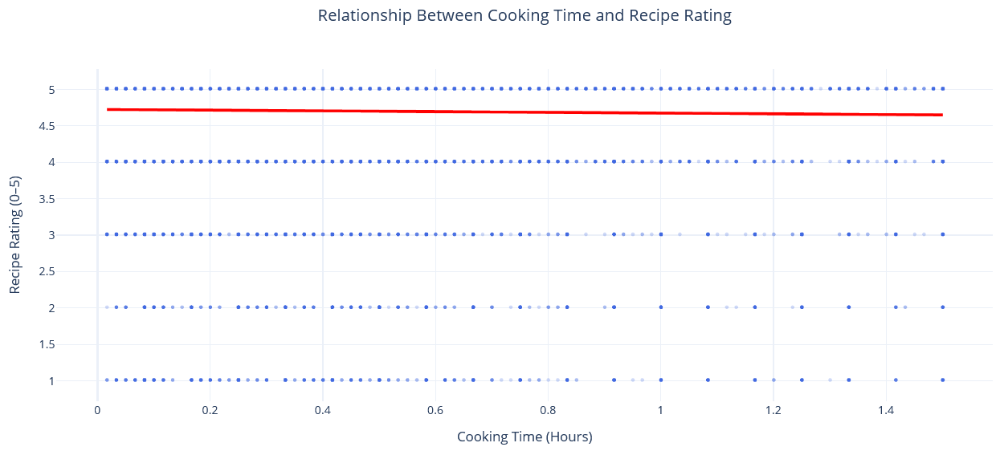
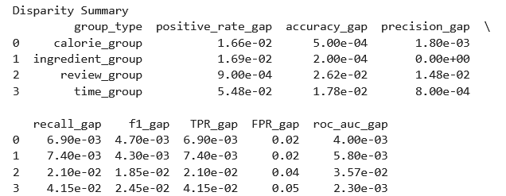
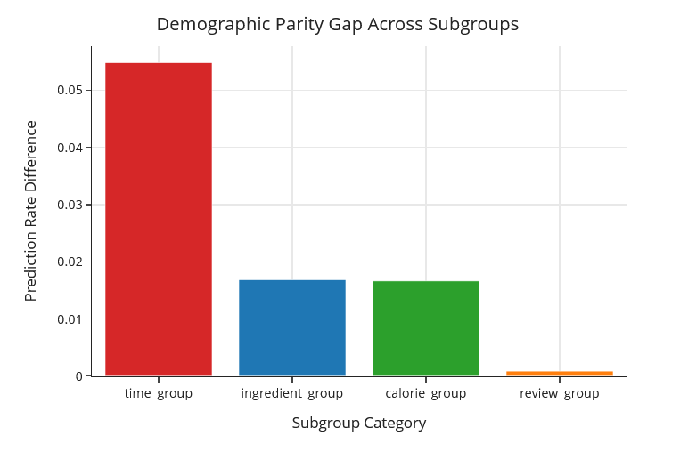

Introduction
This project investigates whether we can predict if a recipe review will receive a five-star rating using review text and recipe-related features. Readers should care about this question because understanding what drives five-star ratings can help recipe creators write better recipes and help recipe platforms identify which content to promote more often.
Our central question is: How accurately can we predict whether a recipe review submitted by a user will be five stars based on the review text and recipe characteristics?
Dataset
Our project uses two datasets: a recipes dataset and an interactions dataset from Foods.com, which contains user reviews and ratings data from 2008 to 2018. These datasets were merged together using a left join on the recipe identifier.
Relevant Columns
| Column | Description |
|---|---|
| review | Text written by the user about the recipe |
| rating | User rating assigned to the recipe |
| minutes | Total time required to make the recipe |
| tags | Recipe tags used for categorization |
| ingredients | List of ingredients used in the recipe |
| n_ingredients | Number of ingredients in the recipe |
| submitted | Date the recipe was submitted |
| avg_rating | Average rating across users |
Data Cleaning
1. Merging the datasets
We merged the recipes and interactions datasets using a left join to retain all recipes, even those without review activity.
merged = recipes.merge(
interactions,
how="left",
left_on="id",
right_on="recipe_id"
)2. Replacing 0 ratings with missing values
All records where the value in the rating column was 0 were treated as missing and replaced with NaN so that missingness could be studied appropriately.
merged["rating"] = merged["rating"].replace(0, np.nan)3. Dropping redundant columns
The columns id, contributor_id, steps, description, user_id, date, and recipe_id were removed from the merged dataset due to redundancy.
merged = merged.drop(
columns=["id", "contributor_id", "steps", "description", "user_id", "date", "recipe_id"],
errors="ignore"
)4. Expanding the nutrition column
The nutrition column was converted from a list-like string with seven values for each record into separate usable numeric columns such as
calories, total_fat, sugar, sodium, protein, saturated_fat, and carbs.
This was done so that nutrition categories could be used for exploratory data analysis and model building.
nutr_cols = ["calories", "total_fat", "sugar", "sodium", "protein", "saturated_fat", "carbs"]
merged["nutrition"] = merged["nutrition"].apply(
lambda s: ast.literal_eval(s) if isinstance(s, str) else s
)
def ensure7(x):
return x if isinstance(x, list) and len(x) == 7 else [np.nan] * 7
merged[nutr_cols] = pd.DataFrame(
merged["nutrition"].apply(ensure7).tolist(),
columns=nutr_cols,
index=merged.index
)
merged = merged.drop(columns=["nutrition"], errors="ignore")After running the scripts, the dataset looks like this:

5. Creating date-based features
We converted the submitted column into datetime format and extracted year, month, and month-year values for time-based analysis.
import datetime as dt
merged["submitted"] = pd.to_datetime(merged["submitted"])
merged["year"] = merged["submitted"].dt.year
merged["month"] = merged["submitted"].dt.month_name()
merged["month_year"] = merged["submitted"].dt.strftime("%B %Y")
merged["date"] = merged["submitted"].dt.strftime("%m-%d-%Y")
merged["month"] = merged["month"].astype("string")
merged = merged.dropna(subset=["year"])
merged["year"] = merged["year"].astype("int64")6. Creating time-threshold indicators
We engineered Boolean columns for recipes taking 60, 30, or 15 minutes or less.
merged["60 Minutes or Less"] = np.where(merged["minutes"] <= 60, True, False).astype(bool)
merged["30 Minutes or Less"] = np.where(merged["minutes"] <= 30, True, False).astype(bool)
merged["15 Minutes or Less"] = np.where(merged["minutes"] <= 15, True, False).astype(bool)7. Creating meal type
A new meal_type feature was derived from recipe tags to group recipes into categories such as dessert, breakfast, lunch, snack, and dinner.
import ast
merged["tags"] = merged["tags"].apply(
lambda x: ast.literal_eval(x) if isinstance(x, str) else x
)
def get_meal_type(tags):
if not isinstance(tags, list):
return "other"
tags_lower = [t.lower() for t in tags]
if any("dessert" in t for t in tags_lower):
return "dessert"
if any("breakfast" in t for t in tags_lower):
return "breakfast"
if any("lunch" in t for t in tags_lower):
return "lunch"
if any("snack" in t for t in tags_lower):
return "snack"
if any("dinner" in t for t in tags_lower):
return "dinner"
return "other"
merged["meal_type"] = merged["tags"].apply(get_meal_type)The following code returns the total number of meal types identified from the previous script:
merged["meal_type"].value_counts()
meal_type
other 144497
dessert 34641
dinner 21880
lunch 17004
breakfast 14992
snack 14158. Creating an hours column
The following code creates a new column called Hours by dividing the minutes column by 60.
This is used to detect trends in exploratory data visualization based on how long recipes take to prepare.
merged["Hours"] = merged["minutes"] / 609. Outlier removal
We applied the IQR rule to numeric columns to remove extreme outliers that could distort visual analysis and modeling.
cols = [
"minutes",
"n_steps",
"n_ingredients",
"calories",
"total_fat",
"sugar",
"sodium",
"protein",
"saturated_fat",
"carbs",
"Hours"
]
for col in cols:
Q1 = merged[col].quantile(0.25)
Q3 = merged[col].quantile(0.75)
IQR = Q3 - Q1
lower = Q1 - 1.5 * IQR
upper = Q3 + 1.5 * IQR
merged = merged[
(merged[col] >= lower) &
(merged[col] <= upper)
]Exploratory Data Analysis
Distribution Shapes
Histograms showed that hours, sugar, and calories were right-skewed, while ratings were left-skewed. This suggests that transformations may be useful in downstream machine learning pipelines.




Meal Type Counts
Dessert was the most common meal type represented in the dataset after excluding recipes labeled as "other".

Review Trends Over Time
A line chart showed a general decline in review volume across most meal types over time, with snack recipes as an exception.

Cooking Time by Meal Type
Box plots indicated that desserts and dinners generally take the longest to prepare, while lunch and snack recipes take the least time.

Average Rating by Meal Type
The following code computes the mean ratings by meal type. Mean ratings were high across all meal types, generally at or above 4.6, suggesting that the dataset is skewed toward favorable reviews.
food_group_ratings = (
merged.pivot_table(
index="meal_type",
values="rating",
aggfunc="mean"
)
.rename(columns={"rating": "Average Rating"})
.sort_values(by="Average Rating", ascending=False)
)
Assessment of Missingness
Rating Missingness
We believe the rating column may be NMAR because whether a rating is missing may depend on the number of steps that a user must complete to cook the meal.
A user who is frustrated with the amount of steps required to make a meal may be disincentivized to leave a review.
Permutation Test
We tested whether rating missingness was associated with n_steps.
Null Hypothesis: The missingness in the rating column is independent of the Number of Steps column.
Alternate Hypothesis: The missingness in the rating column depends on the Number of Steps column.
testing1 = merged[["Number of Steps", "rating"]].copy()
testing1["missing_ratings"] = testing1["rating"].isna()
testing1.head(5)
observed = abs(testing1.groupby("missing_ratings")["Number of Steps"].mean().diff().iloc[-1])
n_reps = 5000
stats = []
for _ in range(n_reps):
shuffled_missing = np.random.permutation(testing1["missing_ratings"].values)
temp = testing1.copy()
temp["missing_ratings"] = shuffled_missing
stat = abs(
temp.groupby("missing_ratings")["Number of Steps"]
.mean()
.diff()
.iloc[-1]
)
stats.append(stat)
p_value = (np.sum(np.array(stats) >= observed) + 1) / (n_reps + 1)
p_value

Hypothesis Test
We tested whether there is an association between cooking time in hours and recipe rating.
Null Hypothesis
There is no association between cooking time in hours and recipe rating.
Alternative Hypothesis
There is an association between cooking time in hours and recipe rating.
Test Used
We used a Spearman correlation test because the relationship between hours and rating did not appear to be linear. The Spearman correlation test is appropriate in this situation because it measures whether two variables move together in a monotonic relationship.

After running the Spearman correlation test, we found that longer cooking times were associated with slightly lower ratings. However, the effect of this relationship is negligible in practice.
Spearman correlation coefficient: -0.0282
p-value: 9.8985e-25Since the p-value is below the alpha level of 0.05, we reject the null hypothesis. However, the correlation coefficient is extremely close to zero, indicating that the relationship is statistically significant but practically negligible. There is some evidence of a monotonic relationship where ratings decrease slightly as cooking time increases.

Modeling and Prediction
Our broader project goal is to predict whether a recipe review will receive a five-star rating using recipe metadata, engineered features, and review-related information. We first built a baseline model, then developed an optimized model, and finally evaluated fairness across meaningful recipe subgroups.
Base Machine Learning Model
Our first predictive model serves as a baseline for determining whether a review will receive a five-star rating based on features. The purpose of this model is to establish an interpretable starting point before adding more advanced feature engineering and optimization.
Target Variable
The response variable for our classification task is whether a review received a five-star rating.
We encoded the column is_five_star as a Boolean outcome, where True indicates a five-star review and
False indicates any lower rating than five stars. The code to perform this sequence is the following
merged["is_five_star"] = (
np.where(merged["rating"] == 5, True, False).astype(bool)
)Features Used
In the baseline model, we used structured numeric recipe-related features that were available after cleaning the dataset. These included variables such as review_length, calories, Nubmer of Steps, Number of Ingredients and Total Minutes. We selected these features because they are interpretable and provide a simple foundation for prediction.
feature_cols = [
"review_length",
"calories",
"Number of Steps",
"Number of Ingredients",
"Total Minutes"
]
Model Choice
We used a logistic regression classifier as our baseline model because it is efficient, interpretable, and well-suited for binary classification tasks. Logistic regression also provides a strong benchmark for evaluating whether more complex models meaningfully improve predictive performance.
Pipeline
Our baseline pipeline included preprocessing steps for both numeric and categorical variables. Numeric columns were imputed and scaled, while categorical columns were one-hot encoded. This ensured that the model could handle mixed data types appropriately. The following represents the process required to
classification = merged[feature_cols + ["is_five_star"]].dropna(subset=["review_length"])
X = classification[feature_cols].to_numpy()
Y = classification["is_five_star"].to_numpy()
from sklearn.model_selection import train_test_split
X_train, X_test, Y_train, Y_test = train_test_split(
X, Y, test_size=0.25, shuffle=True, random_state=1
)
from sklearn.preprocessing import StandardScaler
scaler = StandardScaler()
X_train = scaler.fit_transform(X_train)
X_test = scaler.transform(X_test)
from sklearn.linear_model import LogisticRegression
lr = LogisticRegression(max_iter=1000, random_state=1, class_weight='balanced')
lr.fit(X_train, Y_train)
Y_pred = lr.predict(X_test)
Y_prob = lr.predict_proba(X_test)[:, 1]
Y_test_i = Y_test.astype(int)
Y_pred_i = Y_pred.astype(int)
Evaluation
We evaluated the baseline model using classification metrics including accuracy, precision, recall, F1-score, and ROC-AUC. Because the dataset is skewed toward favorable ratings, metrics beyond accuracy were important for understanding the model's predictive behavior.
The baseline classifier achieved an accuracy of 53.4% and an ROC-AUC score of 0.52, indicating that the model performs only slightly better than random guessing. While the model demonstrates moderate precision (0.74) when predicting five-star reviews, recall is relatively low (0.56), meaning that a substantial portion of actual five-star reviews are misclassified. However, its performance suggested that additional information such as review text, tags, and ingredients may improve prediction. The biggest problems with this classifier was that it displayed moderate precision, has poor recall, has weak discriminative ability and has similar performance to randomly guessing the target variable.

Optimized Machine Learning Model
The process to arrive at the model that performed the best involved our team trying several models for the Logistic Regression classifier, Decision Tree classifier as well as the Naive Bayes classifier. After some deliberation, we discovered that a fully optimized logistic regression classificaton model performed the best when optimized to account for new numeric and text features, transformations and cross validation. After establishing a baseline, we developed an optimized logistic regression model to improve predictive performance. The main goal of the optimized model was to capture more nuanced signals from recipe content and review behavior.
Additional Features
In the optimized model, we expanded the feature set to include more informative variables such as review, tags as well as ingredients. Additionally, two new columns tags list and ingreidents list were created to extract more metadata from the tags and inredients columns using lambda functionality. These additions allowed the model to incorporate both recipe metadata and richer textual or categorical context.
feature_cols = ["review_length","calories","Number of Steps","Number of Ingredients","Total Minutes"]
text_col = "review"
target_col = "is_five_star"
classification2= merged[feature_cols + [text_col, "tags", "ingredients", target_col]].dropna(subset=[target_col]).copy()
classification2["tags_list"] = classification2["tags"].apply(parse_maybe_list)
classification2["ingredients_list"] = classification2["ingredients"].apply(parse_maybe_list)
classification2["tags_text"] = classification2["tags_list"].apply(lambda xs: " ".join(map(str, xs))).fillna("")
classification2["ingredients_text"] = classification2["ingredients_list"].apply(lambda xs: " ".join(map(str, xs))).fillna("")
X = classification2[feature_cols + [text_col, "tags_text", "ingredients_text"]]
Y = classification2[target_col].astype(int).to_numpy()
Feature Engineering
Several feature engineering steps were applied to improve model quality. These included log transformations for skewed numeric variables, vectorization of text-based inputs, and encoding of high-cardinality categorical information such as recipe tags and ingredients. To process all of these changes, a numeric pipeline were constructed to convert the numeric features to a np.array, perform log transformations on all columns as well as perform standard scaling.
def to_numeric_array(df):
return df.apply(pd.to_numeric, errors="coerce").fillna(0).to_numpy(dtype=np.float64)
def lop1p_array(arr):
arr = np.asarray(arr, dtype=np.float64)
arr = np.clip(arr, 0, None)
return np.log1p(arr)
numeric_pipe = Pipeline(steps=[
("to_num", FunctionTransformer(to_numeric_array, validate=False)),
("lop1p", FunctionTransformer(lop1p_array, validate=True)),
("scale", MaxAbsScaler()),
])
def clean_text(s):
return s.fillna("").astype(str)
def make_text_pipe(max_features, ngram_range=(1,1), stop_words=None, min_df=1):
return Pipeline(steps=[
("clean", FunctionTransformer(clean_text, validate=False)),
("tfidf", TfidfVectorizer(
max_features=max_features,
ngram_range=ngram_range,
stop_words=stop_words,
min_df=min_df
))
])
preprocess = ColumnTransformer(
transformers=[
("num", numeric_pipe, feature_cols),
("rev", make_text_pipe(2000, (1, 1), stop_words="english"), "review"),
("tag", make_text_pipe(1000, (1, 2), stop_words=None, min_df=5), "tags_text"),
("ingredients", make_text_pipe(2000, (1,2), stop_words=None, min_df=5), "ingredients_text")
],
remainder="drop"
)
model = Pipeline(steps=[
("preprocess", preprocess),
("clf", LogisticRegression(max_iter=2000, class_weight="balanced", random_state=1))
])
Model Tuning
We optimized the model using StratifedKFold as well as Grid SearchCV for cross fold validation. Additionally, we performed hyperparameter tuning on 9 different possible c values. This allowed us to compare multiple parameter settings and identify the configuration that produced the strongest out-of-sample performance. Our optimization process focused on improving generalization rather than simply fitting the training data.
from sklearn.model_selection import StratifiedKFold, GridSearchCV
cv = StratifiedKFold(n_splits=5, shuffle=True, random_state=1)
param_grid = {
"clf__C": [0.01, 0.05, 0.1, 0.25, 0.5, 1, 2, 5, 10]
}
grid = GridSearchCV(
estimator=model,
param_grid=param_grid,
scoring="f1",
cv=cv,
n_jobs=-1
)
grid.fit(X, Y)
scoring = {
"roc_auc": "roc_auc",
"accuracy": "accuracy",
"precision": "precision",
"recall": "recall",
"f1": "f1",
}
best_model = grid.best_estimator_
cv_results = cross_validate(
best_model, X, Y, cv=cv, scoring=scoring, n_jobs=-1, return_train_score=False
)
Y_pred_cv = cross_val_predict(best_model, X, Y, cv=cv, method="predict", n_jobs=-1)
Y_prob_cv = cross_val_predict(best_model, X, Y, cv=cv, method="predict_proba", n_jobs=-1)[:, 1]
Performance Comparison
The optimized model signicantly outperformed the baseline model across several evaluation metrics. In particular, there are dramatic improvements in the ROC-AUC (29%), Recall (20%) and F1 Score (18%) suggested that the additional features and tuning process helped the model better distinguish between five-star reviews, which was lacking in the base model.

Fairness Evaluation
In addition to predictive performance, we evaluated whether the final model behaved consistently across different subgroups in the dataset. This step is important because a model that performs well overall may still produce uneven outcomes for certain categories of recipes.
Why Fairness Matters
A fairness analysis helps determine whether the classifier systematically favors or disadvantages certain groups. In our project, subgroup analysis is especially relevant because recipes differ substantially by characteristics such as calorie group, ingredient group, time group and review group.
Subgroups Examined
We examined fairness across several subgroup definitions, including calorie-based groups, ingredient complexity groups, time-based groups and review groups (long review or short review). These subgroup categories were chosen because they reflect meaningful differences in recipe structure and may influence how the model makes predictions.
Metrics Used
We compared positive prediction rates and classification performance across groups using metrics such as accuracy, precision, recall, and F1-score. We also examined demographic parity gaps to identify whether the model predicted five-star outcomes at meaningfully different rates across subgroups.
Fairness Summary (Gap Between Subgroups)
group_type positive_rate_gap accuracy_gap precision_gap recall_gap f1_gap roc_auc_gap TPR_gap FPR_gap
-------------------------------------------------------------------------------------------------------------
calorie_group 0.0166 0.0005 0.0018 0.0068 0.0047 0.0041 0.0068 0.0181
ingredient_group 0.0169 0.0002 0.0000 0.0074 0.0043 0.0058 0.0074 0.0205
time_group 0.0548 0.0178 0.0008 0.0415 0.0246 0.0023 0.0415 0.0478
review_group 0.0009 0.0262 0.0148 0.0210 0.0185 0.0357 0.0210 0.0411

Results
Overall, the fairness analysis suggested that the optimized logistic regression model does not exhibit severe bias across the evaluated subgroups, though some differences in positive prediction rates were observed. The largest disparities appeared when comparing recipe time categories, where quick recipes were slightly more likely to receive positive predictions than longer recipes. Other subgroup comparisons, such as calorie level, ingredient complexity, and review length, showed relatively small differences in prediction behavior.
While these gaps were not large enough to indicate substantial model bias, they highlight areas where the model may respond differently to certain recipe characteristics. These differences are useful for identifying where additional feature inspection, calibration, or threshold adjustments could improve consistency in model predictions.
This analysis highlights that model evaluation should go beyond overall accuracy. Even when a classifier performs well in aggregate, subgroup-level checks are necessary to ensure that predictions remain consistent and interpretable across different parts of the dataset. Performing fairness analysis alongside standard performance metrics helps build more transparent and trustworthy machine learning systems.

Conclusion
Overall, this project shows that recipe metadata and review text can help predict whether a user is exceedingly satsified with a recipe and is likely to leave a five star review. While cooking time (in hours) has only a negligible relationship with ratings, other features such as review text, ingredient structure, the text of tags on the review and a meal's nutritional content may be more useful for predicting five-star outcomes.
Our modeling results suggest that machine learning can be used to meaningfully classify five-star reviews, especially when richer engineered features are included and cross validation has been performed. At the same time, fairness evaluation remains an important part of the process to ensure that strong overall model performance does not mask subgroup-level disparities.